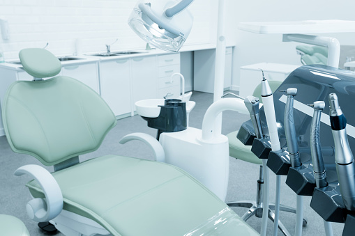

Our Doctor
Dr. Magi Sargious, DDS
Dr. Magi Sargious moved to the Nashville area in 2010 and attended Middle Tennessee State University where she earned her bachelor's degree in science and minor in health in 2013. She completed her Doctorate of Dental Surgery (DDS) at Meharry Medical College School of Dentistry.
Dr. Sargious has two lovely children and she enjoys spending time with them. She also enjoys traveling and spending her spare time with family and friends. Dr. Sargious is excited to serve the wonderful people of McMinnville, Tennesse and surrounding areas.